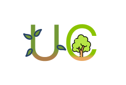
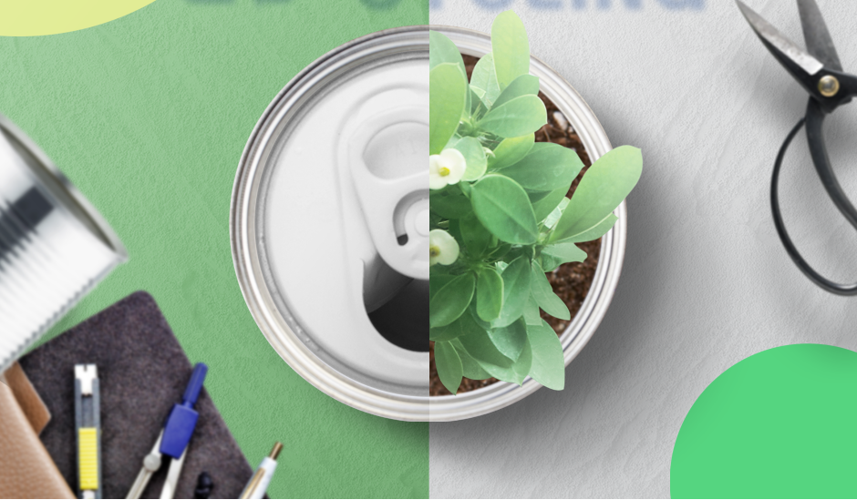
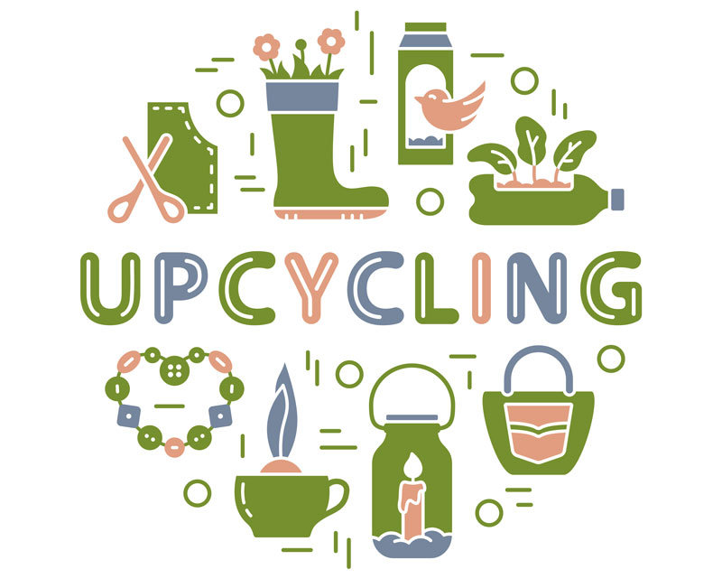
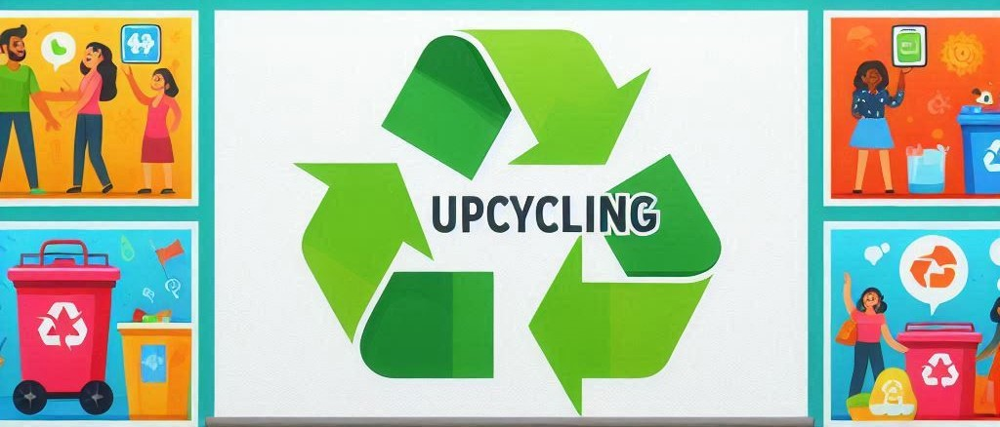
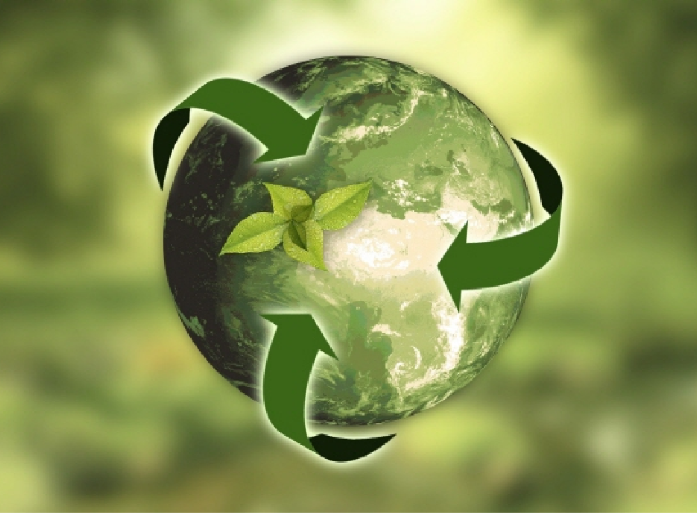

환경 오염을 줄이고 자원을 절약할 수 있는 제품 제작

쓰레기를 버리지 않고 새롭게 변하게 만드는 업사이클링

페트병과 같이 쓸모를 다한 제품을 보여주시면 업사이클링한 모습을 찾아드립니다!

재활용품을 다른 모습으로 변하게 만드는 업사이클링
업사이클링의 장점으로는 환경문제를 개선하는 데 도움을 주는데요.
다양한 모습으로 변하는 업사이클링 종류에는 무엇이 있을까요?